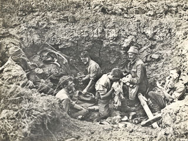
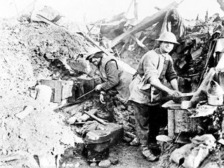
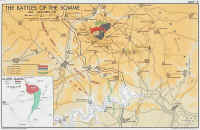
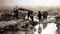
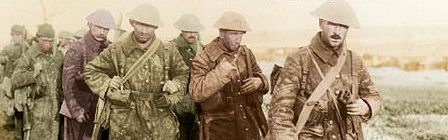
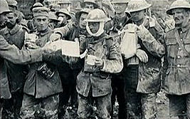

|
LA BATAILLE DE LA
SOMME
 JUILLET Le 1er juillet,
les Britanniques et les Français lancent une offensive pour percer les lignes allemandes.
À 7,30 du matin, des milliers de soldats montent à l'assaut
des lignes ennemies. Formant un
front de plus de quarante kilomètres, ils avancent à travers
le No
Man's Land, sous le
feu des mitrailleuses allemandes. Tout est terminé en moins d'une
demi-heure. JUILLET Le 1er juillet,
les Britanniques et les Français lancent une offensive pour percer les lignes allemandes.
À 7,30 du matin, des milliers de soldats montent à l'assaut
des lignes ennemies. Formant un
front de plus de quarante kilomètres, ils avancent à travers
le No
Man's Land, sous le
feu des mitrailleuses allemandes. Tout est terminé en moins d'une
demi-heure.
C'est un massacre, plus de cinquante-cinq mille britanniques sont tués, blessés ou portés
manquants en une seule journée.
Ce jour-là l'unité de
Charles tire près de mille salves, la majorité pour faire six tirs de
barrage, en appui à l'infanterie.
Les tirs nourris se poursuivent tout le mois, l'unité bouge
quelques fois de position, mais pas bien loin car les canons
tirent chaque jour. À la fin du mois, un artilleur de l'unité
est tué et cinq autres sont blessés.
AOÛT
Les tirs nourris se poursuivent chaque jour, une moyenne de
trois cents salves mais avec des pointes, dont plus de neuf
cents salves le 18 août. Aucun
répit. Les cibles sont surtout des batteries ennemies, mais
l'unité fait aussi plusieurs tirs de barrage. Les routes sont
souvent bombardées, et les alentours de Flers, dont l'Abbaye
Eaucourt.
SEPTEMBRE
Tirs nourris quotidiens. L'unité de Charles est en action tous
les jours, sans exception, depuis la fin juin. Elle bouge vers
une nouvelle position au nord-ouest de Montauban le 11 du
mois, et, le jour même, lance plus de deux cents salves sur
douze batteries
ennemies et l'église de Flers. Le 15 du mois, elle lance mille salves sur les mêmes cibles. Le 27 septembre, l'unité bouge de
nouveau vers une nouvelle position, et lance quatre cents salves sur
trente batteries ennemies le jour même. Les trois derniers jours de
mois, les tirs sont plus légers.
|

Soldats au Front faisant leur toilette
|

Cuisiniers au front
|
OCTOBRE Les
tirs se poursuivent quotidiennement, sans exception. La cadence
diminue avec, en moyenne, deux cents salves par jour, mais certains
jours on tire plus de six cents salves.
NOVEMBRE
Les tirs se poursuivent quotidiennement. La cadence diminue
encore avec une moyenne de cent salves par jour, avec quelques
pointes de plus de quatre cents salves. Les 18 et 24 novembre, aucun tir,
c'est la première fois que cela arrive depuis des mois.
Le 28 novembre, les artilleurs partent en train vers La
Neuville pour un camp de repos. Les conducteurs conduisent
les wagons par la route en passant la nuit à Morlancourt. Ils
arrivent à La Neuville le lendemain midi.
DÉCEMBRE Le 4 décembre, Charles et son unité prennent le train vers
Montauban. Le 9 décembre, en début d'après-midi, ils
remontent dans un train vers Barlin où ils arrivent le
lendemain matin. Ils y séjournent du 11 au 25 décembre. Le
lendemain de Noël, l'unité bouge vers Bully Grenay. Les
canons sont en position dès l'arrivée, et le 31 décembre, on
tire cinq salves sur les routes.
|

La Somme est un fleuve du nord de
la France, dans la région de Picardie.
|

Les batailles canadiennes de la Somme en 1916.
|
|

De retour du front
|

Tir de barrage de nuit
|
Les troupes ne gagnent plus de terrain cette année-là. Les pluies
d'automne transforment le sol en bourbier et l'offensive
s'enlise; le front n'a progressé que de six milles, bien
que l'avance comme telle n'ait pas tant d'importance si ce n'est
pour le moral des troupes. La Somme fait passer l'armée
britannique d'une armée de recrues impatientes et inexpérimentées
en une machine de guerre comparable à celles de la France
et de l'Allemagne, mais à un terrible coût en vies humaines.
L'historien officiel de l'Armée canadienne, le colonel
Nicholson, dit au sujet de la Somme : « ...
nous ne pouvons fermer les yeux sur l'horreur de l'immense
boucherie ».
Cette guerre d'usure sans issue
va
durer encore deux ans.
Garder le moral

De nombreux facteurs contribuent à encourager les soldats
à se battre. Les liens d'amitié, de loyauté et de communauté
basés sur une expérience commune et des dangers partagés sont
le principal de ces facteurs, forgeant un solide sentiment
d'appartenance au groupe, particulièrement dans le cas de
groupes restreints.
 La formation, une discipline stricte et un
leadership fort motivent également les soldats, et la peur
des peines contribue à rendre les soldats obéissants. Les
traditions, les valeurs militaires et le sentiment bien ancré de la justesse de leur
cause sont également importants, même dans des armées constituées de civils comme
au Canada.
La formation, une discipline stricte et un
leadership fort motivent également les soldats, et la peur
des peines contribue à rendre les soldats obéissants. Les
traditions, les valeurs militaires et le sentiment bien ancré de la justesse de leur
cause sont également importants, même dans des armées constituées de civils comme
au Canada.
Les responsables militaires s'efforcent de fournir aux soldats les petites douceurs
qui peuvent les aider à garder le moral. Les plaisirs simples
sont importants pour la santé de l'esprit, du corps et de l'âme
au cours des longs jours passés au front, souvent sous des bombardements infernaux.
Des douceurs du pays
 Le courrier provenant du pays est livré tous les jours.
C'est un lien important avec les personnes chères et les
soldats gardent un vif intérêt pour les activités de leur
famille, de leurs amis et de leur communauté. Les lettres des
soldats sont censurées par leurs
officiers et souvent par différents postes de commandement
derrière les lignes, mais les hommes racontent
tout de même leur vie quotidienne à ceux qui sont
restés au pays.
Des colis de douceurs envoyées du pays
sont également
un plaisir périodique. Ils contiennent des aliments dont ils ont bien besoin, des revues,
des vêtements, des cigarettes de leurs marques préférées.
La plupart des soldats fument, et beaucoup. Ils reçoivent
de l'armée des cigarettes qui font partie de leur ration
hebdomadaire, mais ils n'ont pas le choix de la marque.
Le rhum, récompense, médicament et motivation
 Le rhum distribué par l'armée
est également important.
Lorsque le rhum est disponible dans les tranchées, les
soldats en reçoivent une petite dose le matin et une autre le
soir. C'est une récompense, un médicament et un moyen
de motiver les soldats à se battre. Ceux qui ont commis des
infractions n'ont pas droit au rhum; ceux qui se portent volontaires pour des raids dans les tranchées ou
d'autres missions dangereuses en reçoivent une ration supplémentaire. Le rhum distribué par l'armée
est également important.
Lorsque le rhum est disponible dans les tranchées, les
soldats en reçoivent une petite dose le matin et une autre le
soir. C'est une récompense, un médicament et un moyen
de motiver les soldats à se battre. Ceux qui ont commis des
infractions n'ont pas droit au rhum; ceux qui se portent volontaires pour des raids dans les tranchées ou
d'autres missions dangereuses en reçoivent une ration supplémentaire.
|
|